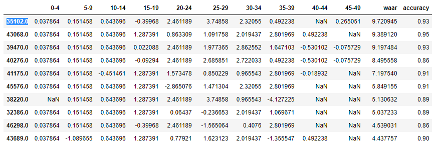
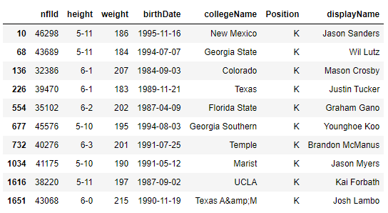

Introduction and Motivation
Kaggle is a popular machine learning and data science site. They often host contests aimed at solving real-world problems for various organizations. For the last few years, they’ve hosted the NFL Big Data Bowl, which challenges participants to leverage NFL data to come up with meaningful insights. This year’s contest focused on special teams play, an often overlooked part of the game.
The work done here was part of an entry to this year's Big Data Bowl. The exact deliverable and question to be addressed was left open-ended, and here we focus on field goal kicking performance.
Evaluating FG Kicking
Generally, on broadcasts and in commentary, FG kickers are evaluated and discussed in terms of simple accuracy, i.e., kicks made / kicks attempted. However, this overlooks something obvious and crucial; not all field goals are equal, both in terms of frequency and difficulty. We can take a look at the probability distribution of success at different parts of the field (across all kickers, from 2018-2020).
While simple accuracy may be an easy and quick metric to evaluate FG perfomance with, it's clearly not suited to capturing much nuance; a kicker who only makes attempts from the <10 yard line would not be very useful, even if they had 100% accuracy. We need a more robust and compelete metric to evaluate kickers with.
Rethinking Field Goal Performance
So what can we do instead? Well, first, we want to adjust for the average probability of success at a given point on the field; making easier kicks is less impressive than making more difficult ones. However, we also want this new metric to be a fairly complete measure of a kicker’s performance; performing well on the most frequent kick ranges is more valuable than performing well at ranges that are rare (this is a detable point; more on this towards the end).
Our new metric will be called "WAAA": weighted accuracy above average. To calculate WAAA, we first split the field up into 5 yard zones (e.g., 0-5, 5-10, etc.). We calculate the average probability of success in these ranges, and subtract those averages from a given player's probability of success at that range. We then multiply this difference by the frequency of a kick at that range, and finally we sum all this together to arrive at a single metric. Our data looks something like this:
Here we have the weighted accuracies above average for the top ten FG kickers in the NFL over this period. The WAAA (note that sometimes it is written as "WAAR", with the "R" being for replacement level, a concept I initially borrowed from MLB analysis but after rethinking decided was a poor fit for the NFL) is then the straight sum of these weighted accuracies. For a sanity check, we can query our dataset (a collection of CSVs resembling output from a relational database) and get the names of the top ten players.
As we can see, this top ten includes some of the kickers considered league greats, like Justin Tucker and Mason Crosby. However, there are also some lesser known kickers on the list, and using this new metric might help teams discover previously unappreciated talent.
When to WAAA and When Not to WAAA
As we have (hopefully convincingly) argued, using simple accuracy as a measure of field goal perfomance does not capture nuances in a kicker's performance. This new metric allows for a more direct comparison to league averages, and weights kicks according to the frequency with which they occur, giving a more accurate overall picture of a kicker's performance in relation to other kickers.
However, something to be noted is that this metric de-emphasizes long-shot attempts, for the simple reason that they are relatively rare. The assumption is thus that they are less likely to occur, and thus less likely to affect the outcome of the game. However, were a unqiue kicker to emerge who performed exceptionally well on long-distance kicks and poorly in other areas, WAAA alone would likely underrate thier contributions to the team; it is indeed entirely reasonable for a team to carry two kickers and to specialize, were that the case. Thus, while WAAA is an improvement over simple accuracy, it should not be the sole metric at play. More work could be done here, is the upshot!